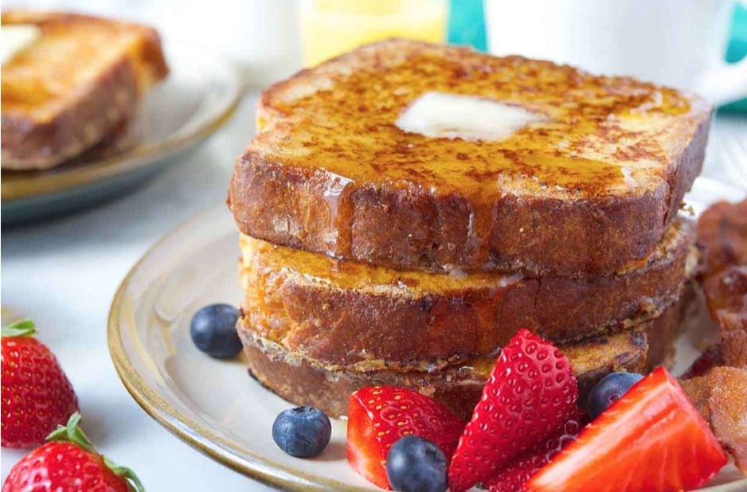
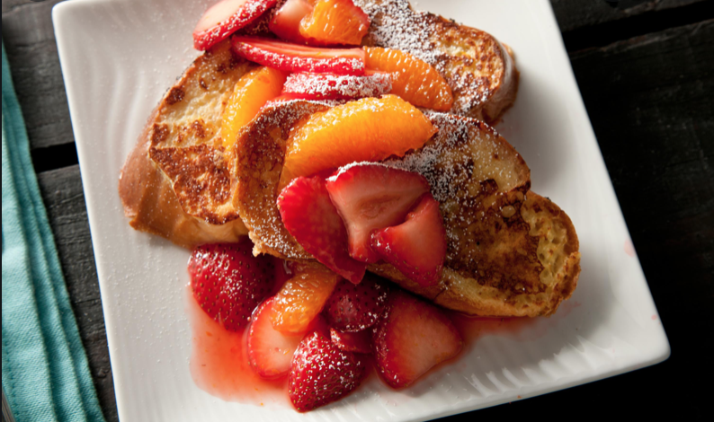

Directions
- In a small bowl, combine cinnamon, nutmeg, and sugar and set aside briefly.
- In a 10-inch or 12-inch skillet, melt butter over medium heat.
- Whisk together cinnamon mixture, eggs, milk, and vanilla and pour into a shallow container such as a pie plate.
- Dip bread in egg mixture. Fry slices until golden brown, then flip to cook the other side. Serve with syrup.

